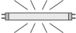
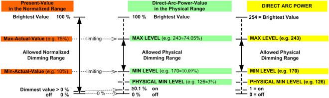

日光灯

DALI 器件荧光灯的类型号为 0。荧光灯可用于设计各种 DALI 器件类型：DC 转换器、LED 模块和低压卤素灯。如果需要这些设备类型之一或未知可能需要哪种设备类型，建议使用荧光灯。
Properties
列出的属性显示在Hardware and network editor > Inspector window > Properties当在中选择 DALI 设备时，选项卡Device view选项卡。
General
属性文本 | 描述 | 默认值 |
|---|---|---|
模板 | Template定义使用哪个模板。该模板存储名称、值和使用的信息。
|
|
姓名 | Name是一个用于输入设备名称的文本字段。该名称显示在设备视图中。 | 取决于所选设备。 |
评论 | Comment是一个文本字段，用于输入设备上的任何有用信息。 | 取决于所选设备。 |
简称 | Short designation显示设备的简短描述。只读。 | 取决于所选设备。 |
订单号 | Order number是用于输入订单号的文本字段。 | 所选设备的设备类型。 |
版本 | Version显示设备的内部版本。只读。 | V2.0 |
描述 | Description显示设备的简短描述。只读。 | 取决于所选设备。 |
 可用模板列表
可用模板列表Device
属性文本 | 描述 | 默认值 |
|---|---|---|
短地址 | Short address显示用于与一台设备进行点对点通信的地址。只读。 短地址应用于安装工具中。 范围： -1：未配置 | -1 |
团体地址 | Group address定义 DALI 组号。 具有相同 DALI 组编号的设备由相同的照明输出对象 (LgtAOut) 控制。 范围： -1：设备不属于 DALI 组。 0…15：组地址 Note：此属性不适用于 DALI-2 设备。 | -1 |
序列号 | Serial number显示设备的序列号。只读。 序列号是在安装和调试期间分配的。 | - |
 0...63
0...63
Alarming
财产 | 描述 | 默认值 |
|---|---|---|
令人震惊 |
|
|
 ：报警已禁用。
：报警已禁用。 ：报警已启用。创建事件注册 (EE) 对象。
：报警已启用。创建事件注册 (EE) 对象。Functions
Generic fluorescent lamp
属性文本 | 描述 | 默认值 |
|---|---|---|
故障等级 | Failure level定义 DALI 通信失败时的光级别。 单位：无 范围： 0：灯灭。 1：灯亮。 254：最亮值 255：保持当前的亮度。 | 254 |
上电电平 | Power-on level定义设备恢复供电后的亮度级别。 设备在上电后 0.5 秒对 DALI 命令做出反应。如果市电上电后0.6秒内没有收到影响功率等级的命令，设备将进入Power-on level立即不褪色。 范围： 0：灯灭。 1：灯亮。 254：最亮值 255：保持当前的亮度。 | 254 |
Special parameters: Low dimming limit
属性文本 | 描述 | 默认值 |
|---|---|---|
低调光限制 | Low dimming limit定义调光范围的下限。
|
|
开启电平 | Switch-on level定义打开的光级别：
见图Dimming range以下。 |
|
淡入淡出时间配置 | Fade time configuration定义调暗至设定亮度水平的时间。
| 0.7 [s] |
淡入淡出时间1) |
|
|
激活警告1) | Activate warning定义是否通过调暗至最低级别警告来通知建筑物用户即将关闭的灯具。
|
|
警告时间1) | Warning time定义执行警告的时间。 单位：[秒] 范围： | 10 |
激活闪烁 | Activate blinking定义是否通过以最低级别闪烁来通知建筑物用户即将关闭的灯具。
|
|
闪烁时间 | 这Blink-off time和Blink-on time定义闪烁警告功能的闪烁频率。 这Blink-on time定义灯将打开的时间。 见图Blink enable 以下。 单位：[0.1秒] 范围： 0：关闭闪烁警告功能。 | 15 |
眨眼关闭时间 | 这Blink-off time和Blink-on time定义闪烁警告功能的闪烁频率。 这Blink-off time定义灯光将被关闭或调暗至由下式定义的调光级别的时间长度Prewarning minimum level. 见图Blink enable 以下。 单位：[0.1秒] 范围： 0：关闭闪烁警告功能。 | 5 |
PrioForcedCtrl2) | PrioForcedCtrl定义眨眼警告功能的优先级。 仅当当前优先级 > PrioForcedCtrl 时，才会执行眨眼警告功能和自主定时关闭功能。 范围： | 5 |
DimUpDownTime2) | DimUpDownTime定义在从 0% 到 100% 或从 100% 到 0% 的整个调光范围内进行调光所需的时间。 Unit: [1/10 s] 范围： | 57 |
预警最低水平2) | Prewarning minimum level定义闪烁警告功能的闪烁关闭时间的调光级别。 Prewarning minimum level仅当眨眼警告功能启用时才有意义。 单元： [％] 范围： | 0 |
 0 %：关闭。
0 %：关闭。 最小值：调暗至最低水平。
最小值：调暗至最低水平。1)此属性仅在 Desigo V5.x 中受支持
2)Desigo V5.x 不支持此属性
